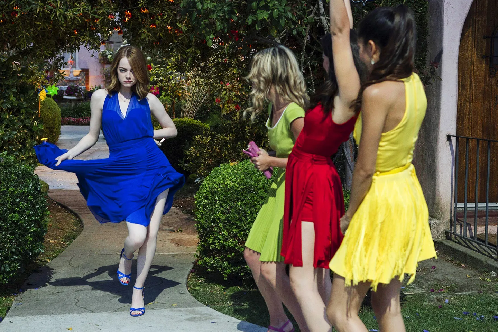

The Gallery Page!
By: Molly Copeland
- - - - - - - - - - - - - - - - - - - - - - - - - - - - - - - - - - - - - - - - - - -
I want to recognize the ammount of effort put into every still in La La Land, and want to depict some of the many scenes, here are some of my favorite stills(descriptions located next to the pictures)throughout the movie:
This still really catches my eye due to the colors, dancing, and clothes comprised in this still. I chose to include this photo because of how complex every single element needed to make this still was thought about (such as their clothes matching the background etc).
The particular moment where Mia and Sebastian look at each other may represent a significant and romantic scene in the film, capturing their connection and the chemistry between the characters. It's a pivotal moment in their relationship, and it's one of the iconic scenes from the movie that resonated with audiences.
Sebastian wearing red and Mia wearing yellow in a scene symbolizes their intense passion for each other and their dreams. Red represents love and desire, while yellow represents optimism and happiness, emphasizing their strong emotional connection and shared enthusiasm for pursuing their dreams together.

I decided to add this still because i found that their choice of outfits, makeup, and conversations reveal their personalities and the unique dynamics within the group. It's a snapshot of youthful joy and the promise of memorable experiences ahead which I found very interesting.
Sebastian's piano playing is a pivotal element. It defines his character's passion for jazz and his dream of opening a jazz club. It also serves as a vehicle for his romantic connection with Mia, contributes to the film's musical numbers, conveys emotions, and symbolizes the pursuit of dreams amidst challenges, making it a central storytelling device whenever he starts playing, plus the La La Land soundtrack is super good(i recocomend listening to it 100%)


.avif)